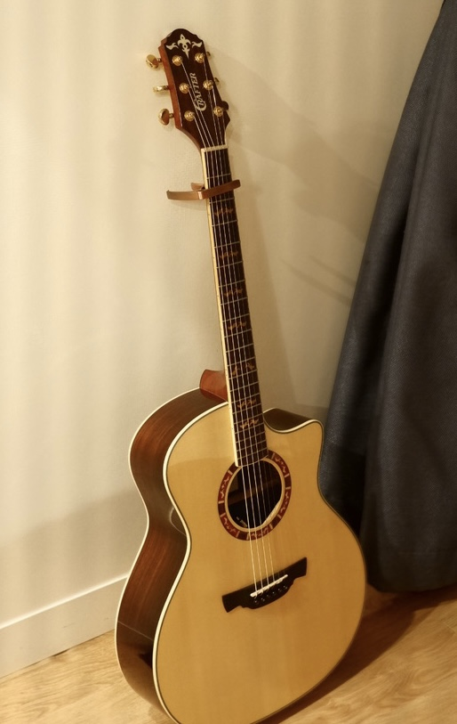
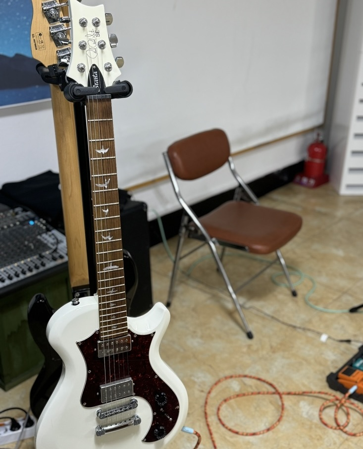
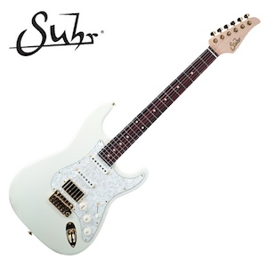
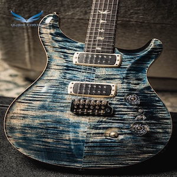

- DH's Music Journal(주)
- 대표자 : 김동현
- 주소 : 서울특별시 강동구 성내동 ~
- 전화 : 010-8319-3505, FAX : (02)123-1234
- copyright by DH's Music Journal Company All Rights Reserved.
나의 악기 소개


왼쪽은 나의 첫 기타인 통기타이고, 모델명은 Crafter God in us
라는 입문자가 치기에 가성비가 매우 좋은 중급 기타입니다.
좋은 기타는 아니지만 제가 사용하기에는 매우 좋은 악기였습니다.
우측은 큰 마음먹고 산 일렉기타이며, 모델명은 PRS SE시리즈이고 생산년도는 기억나지 않습니다.
보통 입문자 보다는 전공생들이 많이 사용하며, 이제는 생산되지 않는 바디 색을 보유하고 있습니다. 정말 이쁘죠?
The left one is my first guitar, an acoustic model named Crafter God in us.
It's a mid-range guitar with excellent cost-performance for beginners.
While it’s not a high-end instrument, it served me very well.
The one on the right is an electric guitar I bought after much consideration, a PRS SE series model.
I don’t remember the exact production year, but it’s a body color that is no longer in production, often used by music majors rather than beginners.
Isn't it beautiful?
나의 꿈의 악기

Shur Classic S
존써 클래식 S라는 모델로 전공생, 기타리스트 사이에서도 흔히 높게 평가받는 모델입니다.
평범하게 생겨보이는 기타와는 다르게, 누구보다도 강력한 존재감을 지니고 있는 친구입니다. 가격은 매우 비싸요.....
This is a model called John Suhr Classic S, which is highly praised even among music majors and professional guitarists.
Though it may look ordinary at first glance, it holds an incredibly strong presence. And yes... it's very expensive.
존써 클래식 S라는 모델로 전공생, 기타리스트 사이에서도 흔히 높게 평가받는 모델입니다.
평범하게 생겨보이는 기타와는 다르게, 누구보다도 강력한 존재감을 지니고 있는 친구입니다. 가격은 매우 비싸요.....
This is a model called John Suhr Classic S, which is highly praised even among music majors and professional guitarists.
Though it may look ordinary at first glance, it holds an incredibly strong presence. And yes... it's very expensive.

PRS Custom
이 친구는 현재 제가 사용하고 있는 기타와 같튼 브랜드의 상위 모델입니다. 돋보적인 색깔과 사운드로 사랑을 많이 받고 있어요.
화려하게 생긴 바디어 걸맞게 정말 매우 좋은 소리와 아주 값비싼 친구랍니다....
This guitar is a higher-end model from the same brand as the one I'm currently using.
It’s loved for its standout color and sound quality.
Just like its flashy body, it delivers an exceptionally rich tone—and yes, it's quite an expensive piece...
이 친구는 현재 제가 사용하고 있는 기타와 같튼 브랜드의 상위 모델입니다. 돋보적인 색깔과 사운드로 사랑을 많이 받고 있어요.
화려하게 생긴 바디어 걸맞게 정말 매우 좋은 소리와 아주 값비싼 친구랍니다....
This guitar is a higher-end model from the same brand as the one I'm currently using.
It’s loved for its standout color and sound quality.
Just like its flashy body, it delivers an exceptionally rich tone—and yes, it's quite an expensive piece...